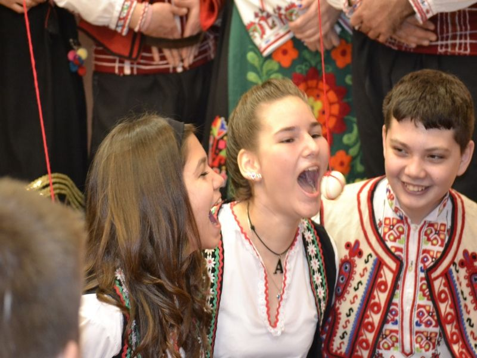
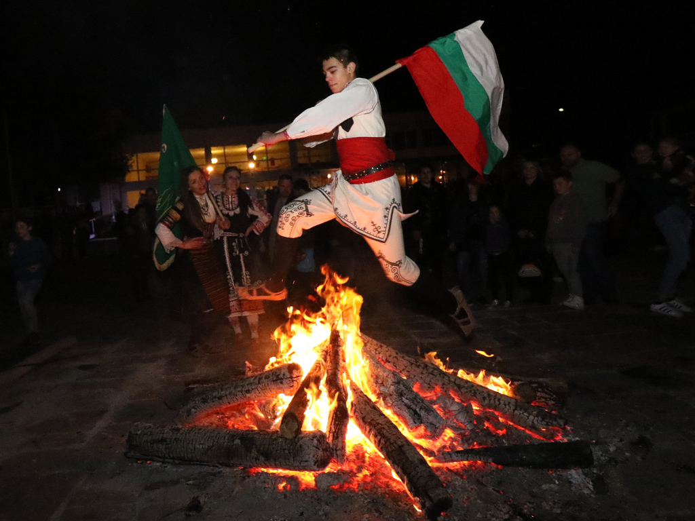
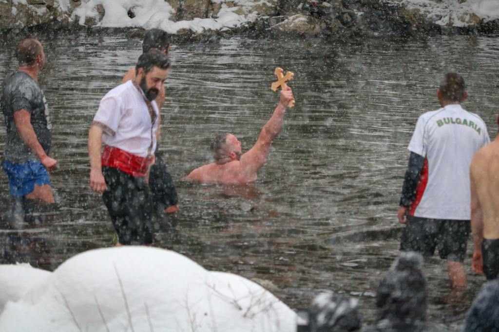
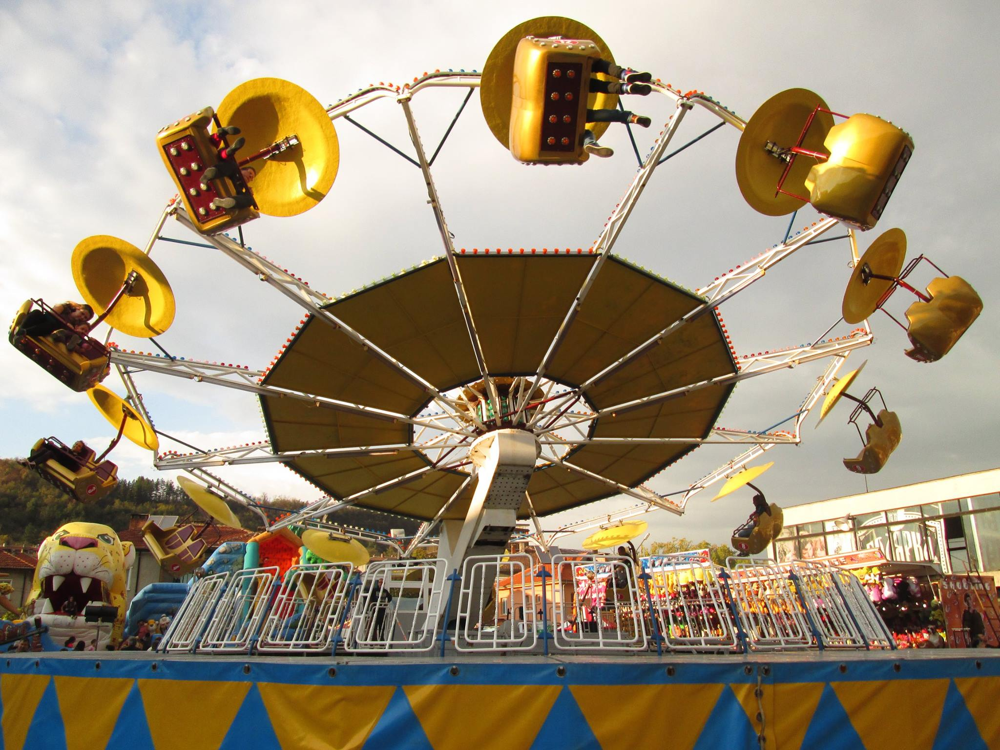
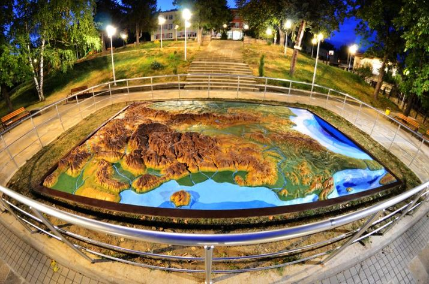

Дряново-Традиции и обичаи
Сирни Заговезни
| Празникът се отбелязва седем седмици преди Великден и една седмица след Месни Заговезни, а след него започва Великият пост. На Сирни Заговезни прошка си вземат по-млади от по-стари, деца от родители, младоженци от кумове - целуват ръка и изричат: "Прощавай, мамо, тате.." - "Господ да прощава, простен да си!", е задължителният отговор. Характерен обичай за този ден е паленето на огньове (клади), а след като прегорят, се прескачат за здраве. После около тях се играят хора и се пеят песни. | Затова празникът се нарича и Поклади. Много популярен е и бил и обичаят хвърляне на стрели. Всеки ерген изстрелва с простичък, направен от самия него, лък запалена стрела в двора на момата, която си е харесал. Обикновено това продължава до късно на Заговезни. Прието е да се извършва обичаят „хамкане“: на конец, окачен на греда на тавана над трапезата, се завързва сварено обелено яйце, парче бяла халва или въглен. |
|  |  |
Йордановден
|
Всяка година в Дряново се спазва традицията и се провежда литургия в храма „Въвъдение Богородично“, а след това се отива при каменния мост
над река Дряновска, построен през 1861 г. от майстор Колю Фичето. Там отецът хвърля богоявленския кръст в студените води на реката и млади
мъже скачат в надпревара да го извадят. Обичайно по 10-ина души се престрашават да влязат в реката, а по 200-300 се събират около моста и
наблюдават. Празнува се на 6 Януари. На този ден имен ден празнуват: Богомил, Йордан, Йорданка, Данчо, Богдан, Богдана, Божидар, Дана, Дан.
Този празник има различни имена в различните области на страната, като някои от тях са Кръстовден, Водици или Водокръщи. Народът нарича празниците Богоявление и Йордановден по общо име „Водици“, заради връзката им към вода; на този ден всеки, който иска да е здрав през годината, се окъпва или поне се измива на реката. На този ден навсякъде, където има водоем, се извършва ритуално хвърляне на кръста от местния свещеник. След изваждането на кръста се служи тържествена литургия, наречена Велик водосвет. |
.jpg "Храм „Въвъдение Богородично“") |
|  |
Празник на град Дряново и традиционен есенен панаир
| Ежегодно през Октомври месец град Дряново отбелязва своя празник с традиционен есенен панаир-концерт. По време на панаира гостите и жителите на града могат да присъстват на празничен концерт, да видят различни изложби и спортни игри. Панаирът се организира от община Дряново, народно читалище "Развитие" и народно читалище "Дряновска пробуда". Хората взимат активно участие в празника. По-младите участват в спортните заниатия и се забавляват. Празникът минава чрез песни, танци, игри и забавление. | ||
|  |  |  |